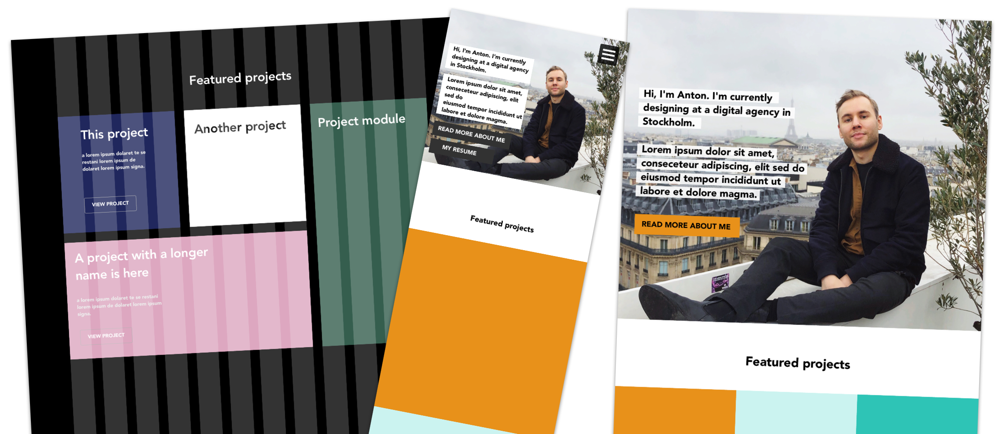

{kind=link}
See my work ➜

Personal Portfolio Website
Background
In order to showcase some of my previous work and to provide information about myself, I developed this portfolio website you’re on right now. It’s a basic website but I built it myself from the ground up, using HTML, CSS (and a little bit of Javascript), and I had fun doing it! Below I give some short info about the process, the tools I used, and a few of the design decisions made, because as always, there’s more to this website than meets the eye.
The Basics
Prototyping in Sketch
Before actually developing the website, I made a few design sketches in Sketch. Trying out different grids, ways of presenting information and playing around with the color scheme of the website. I found this to be a good way to go before writing any code. Luckily I have some experience in front-end development, so when playing around with different designs in Sketch could disregard or modify different solutions based on difficult they would be for me to actually implement. I landed with a basic design that would scale well for both small and big screens. See the picture below for some design sketches where I was playing with different colors and ways of displaying content.
HTML/CSS
Since I wanted to build this site all by myself, so I didn’t use any templates or anything to start out. This also allowed me to fully customise and get the website to look, feel and behave the way I wanted and had designed it too. I did my programming in HTML and CSS, using Brackets (a simple web development app for Mac) To make the website responsive, I used Media Queries to make text and elements scale automatically to fit the screen size of the device you’re browsing the website on.
Responsive
It was important for me that the website looks good both on small screens, like smartphones, and bigger screens like desktop computer screens (and on tablets as well). So during the design process I always think mobile first, since it’s always easier to scale up a website and make it look presentable than the other way around. This resulted in a design that displays text and images in columns on bigger screens (to take advantage of the width of big screens), but when viewed on a smaller screen the images and text automatically order themselves in a more vertical way. If you’re on a desktop or laptop computer right now, try and resize the browser window to see how the content automatically adjusts.
Accessability considerations
Accessibility on the web is something that I prioritize when I design my solutions. I believe that the web should be accessible to all, and it’s a shame that it’s not, especially since there are no limitations on the web, we have the technology to make it all accessible! The issue is not the technology, but the lack of knowledge about the importance and how to make the web accessible. That is why I recently got a certification in Accessibility on the web. And I’m a member of t12t (A Swedish organisation dedicated to inform and inspire people about digital accessibility).
I aimed to make my portfolio accessible to all, following WCAG 2.1 guidelines. Some examples are:
Proper color contrast
After deciding on the color pattern for the website, I checked to verify that the colors chosen had at least 4.5:1 color contrast (to comply with the WCAG 2.0 AA-level criterion). I usually use the online tool Contrast checker to do this. I had to slightly tweak some of the colors to get a good enough contrast according to WCAG.
Tabbable website
I made sure to make the website fully tabbable, to make it easier for users with motion impairments, blind user or any type of user that has difficulties using a regular computer mice or trackpad. This means that instead of navigating with a mouse pointer, you can also just tab (using the tab button, or if you’re using Safari tab+alt) to navigate to links. This also means that you have to consider which elements should be be tabbable and which elements shouldn’t. For example, I intentionally made the Instagram feed on the About me page not tabbable, since it might confuse users using screen readers. I use a third party service to display the feed and I can not add alt-texts to them to explain to for a blind user what he or she is tabbing. So I ‘hide’ the Instagram feed for blind users, and they can browse to my Instagram profile using the link in the footer instead, which is more intuitive since that’s where all the other links to my online profiles are. See the image below to see how tabbing works on the Contact page.
Future additions
I haven’t yet had the time to develop all parts of the website in a way I would like to, below are some future additions to website that I will be add soon.
Google Analytics
Of course I will add analytics to the site, so I can track user behaviour. For example navigation paths, potential bounce rates, time spent on the site and a few other key metrics. I will also track more hard data like the overall traffic, traffic sources, which pages get the most traction, which browsers and devices my visitors use and so on. All of this data will be collected and presented using Google Analytics. Since I have the Google Analytics Individual Qualification certification (GAIQ) this will be easy to set up.
Alt-texts
Alt-text on images and links is something that I will add as soon as possible. It's a crucial accessability point and something that helps user with visual impairments, using screen readers or other types of software that reads the page outloud to the user. On top of this, to properly tag your images is beneficial for search engine optimization.